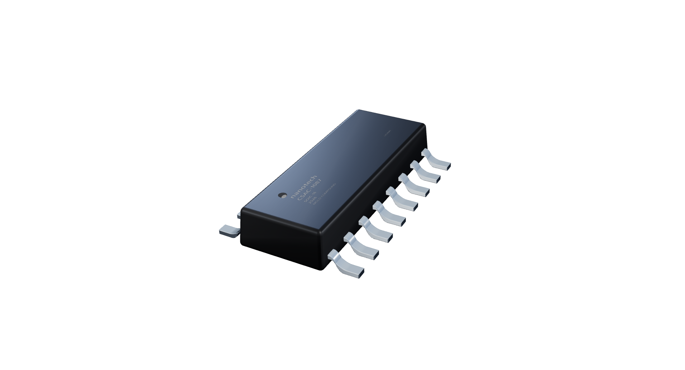

Artificial intelligence designing analog chips.
Analog chips enabling artificial intelligence.
The feedback that changes everything.
What if the sensor was the intelligence?

Designed by AI. Verified in silicon.
Three projects. Five devices. One AI designer.
Sensing → Transduction → Amplification → Encoding.
"Most sensitive exactly when the signal is weakest."
The opposite of every conventional ultrasound receiver.
AI designs hardware. Hardware runs AI.
Each cycle, both improve.
Not a generative button. An agent that reasons about topology, writes SPICE, runs ngspice, reads failure modes, resizes transistors, and iterates — exactly like an engineer.
Software is infinitely copyable. Hardware is physical.
But designing hardware — topology, sizing, simulation, iteration —
is now a problem AI solves faster than humans.
VibroSense-1 is the proof. Scale this to advanced nodes,
MEMS, and nanotechnology — and Bostrom's hardware bootstrapping
acceleration becomes physical reality.